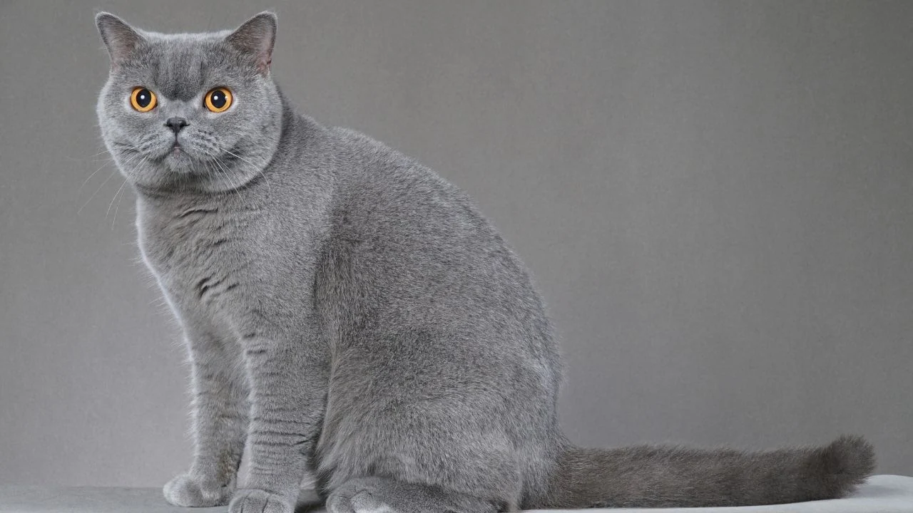
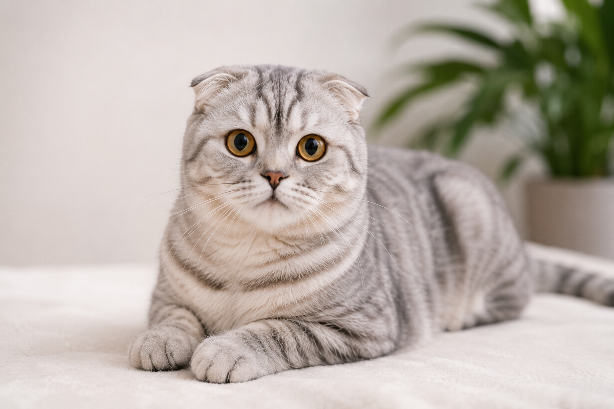
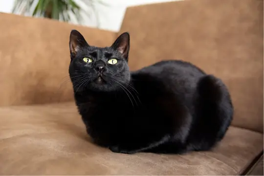
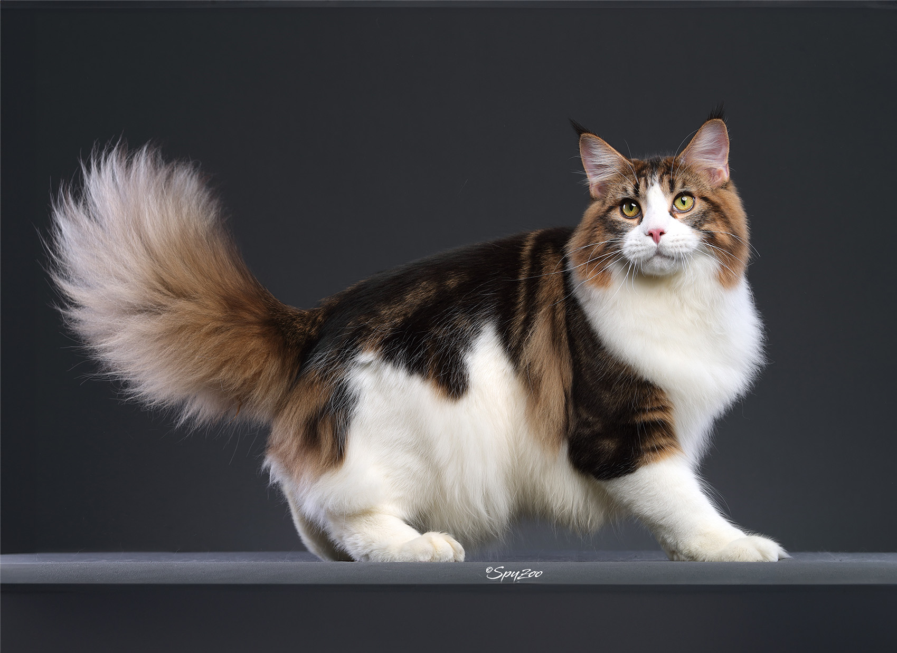
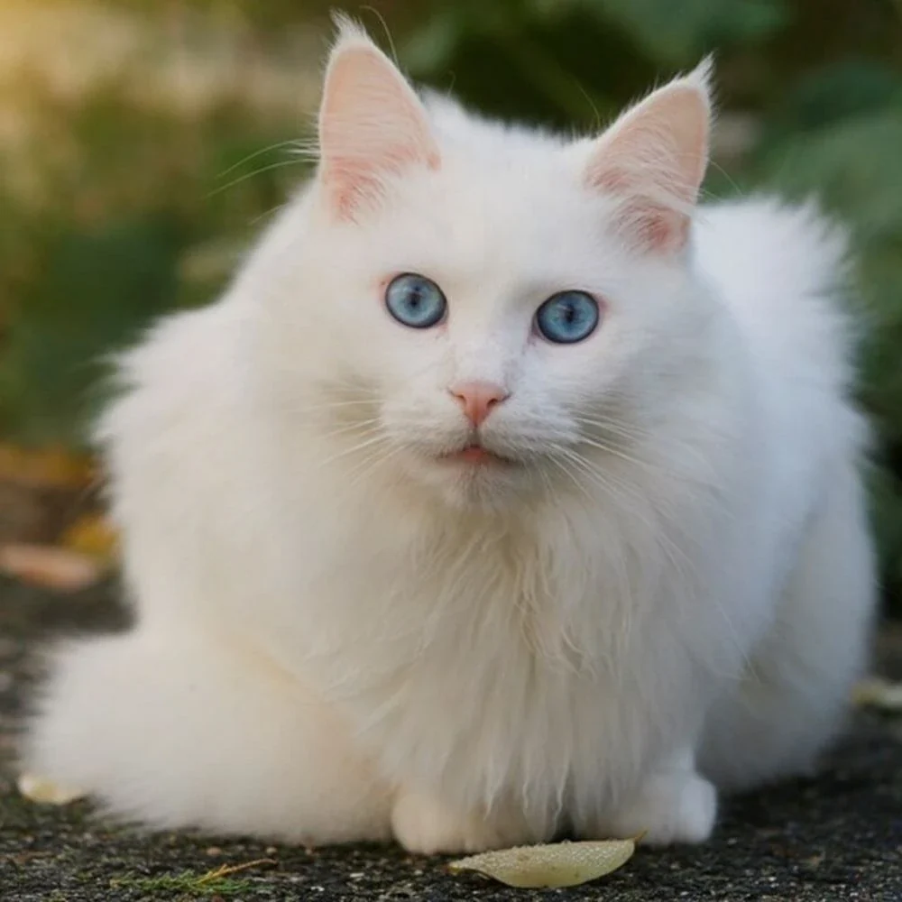
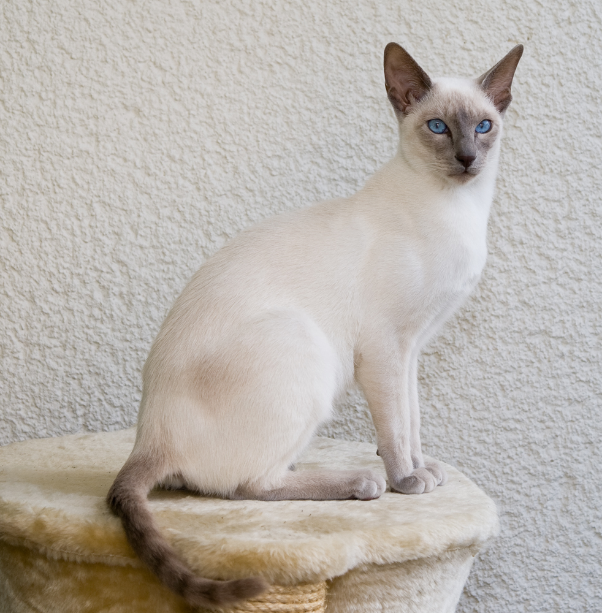
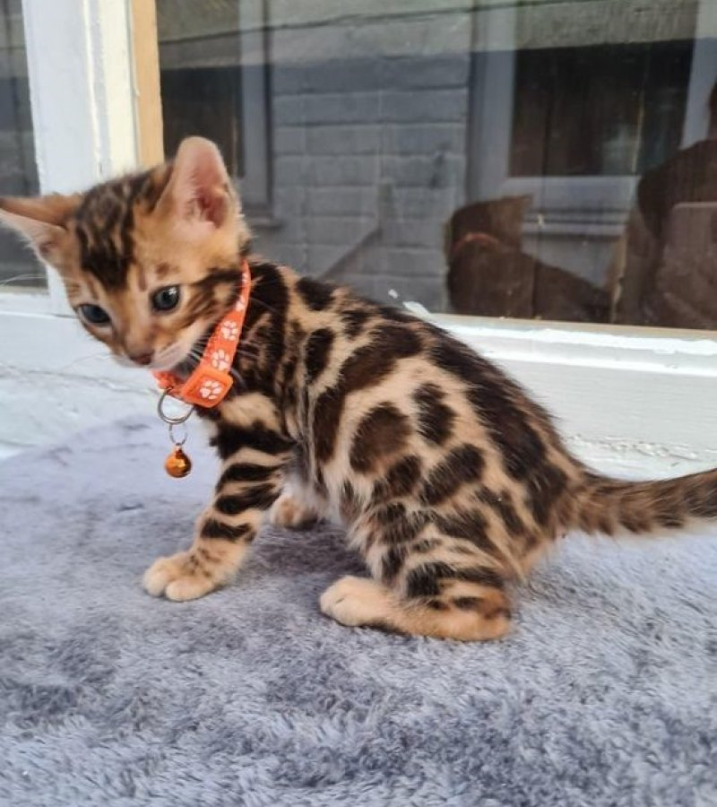
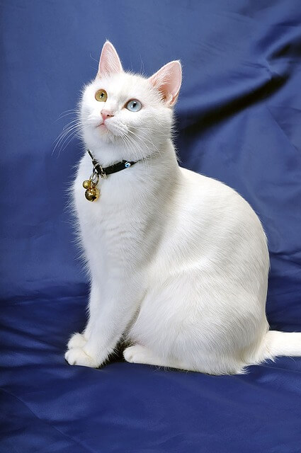
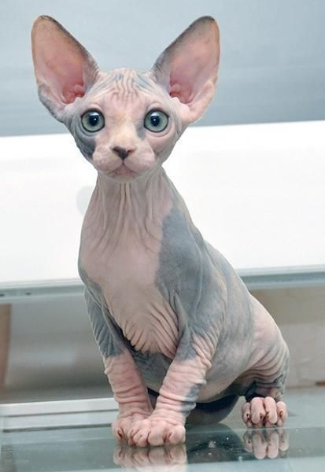
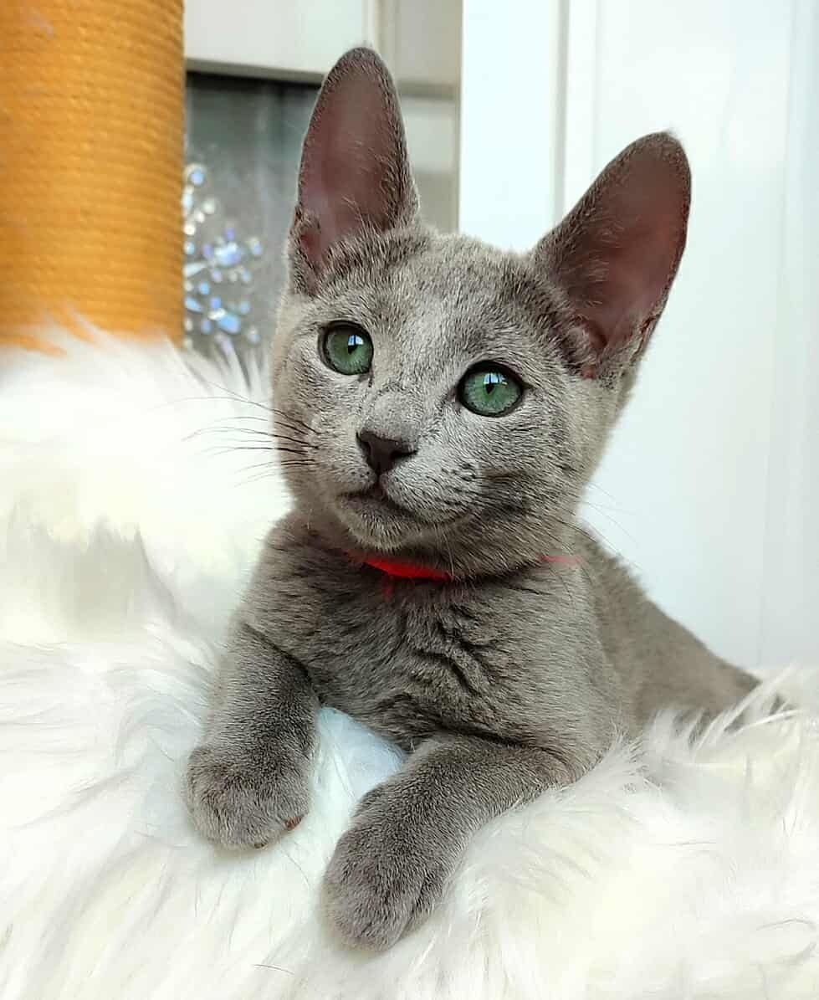

👑 Kedi Cinsleri Ansiklopedisi
Dünyadaki tüm popüler kedi ırklarının görselleri, kökenleri ve karakter özellikleri.

British Shorthair
Köken: İngiltere
Karakter: Sakin, bağımsız, uykucu. Apartman hayatına en uygun, kendi kendine vakit geçirebilen popüler ırk.

Scottish Fold
Köken: İskoçya
Karakter: Uysal, sevimli, sessiz. Kıvrık kulakları ile bilinir, insanlarla ve çocuklarla arası mükemmeldir.

Bombay Kedisi
Köken: ABD
Karakter: Zeki, sevecen, sosyal. Simsiyah parlak tüyleri ve pantere benzeyen asil duruşuyla evcil bir dosttur.
.webp)
Persian (İran Kedisi)
Köken: İran
Karakter: Çok sakin, uyuşuk, sessiz. Basık yüzü andıran yapısı ve upuzun görkemli tüyleri vardır.

Maine Coon
Köken: ABD
Karakter: Dev boyutlu, oyuncu, nazik dev. Dünyanın en büyük evcil kedi ırklarından biridir.

Ankara Kedisi
Köken: Türkiye
Karakter: Zeki, enerjik, sahibine sadık. Uzun ipeksi beyaz tüyleriyle dünya çapında tanınır.

Siyam Kedisi
Köken: Tayland
Karakter: Çok konuşkan, sosyal, hareketli. Sahibiyle sürekli miyavlayarak iletişim kurar.

Bengal Kedisi
Köken: ABD
Karakter: Vahşi görünümlü, aşırı enerjik. Leopar desenli tüyleri vardır, tırmanmayı çok sever.

Van Kedisi
Köken: Türkiye
Karakter: Avcı, zeki, bağımsız. Suyu ve yüzmeyi seven, iki farklı göz rengine sahip eşsiz bir ırktır.

Sphynx (Sfenks)
Köken: Kanada
Karakter: Sıcakkanlı, ilgi bağımlısı. Tamamen tüysüz gövdesiyle bilinir, ev içi bakımı önemlidir.

Russian Blue
Köken: Rusya
Karakter: Utangaç, sessiz, çok asil. Gümüş-mavi tonlarında kısa tüyleri ve yeşil gözleri vardır.
.jpg)
Munchkin (Cüce Kedi)
Köken: ABD
Karakter: Oyuncu, meraklı, hızlı. Bacakları normal kedilere göre çok kısadır ancak çok aktiftirler.